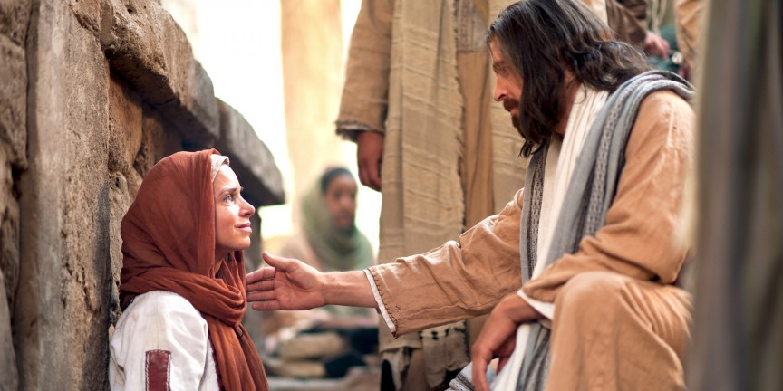
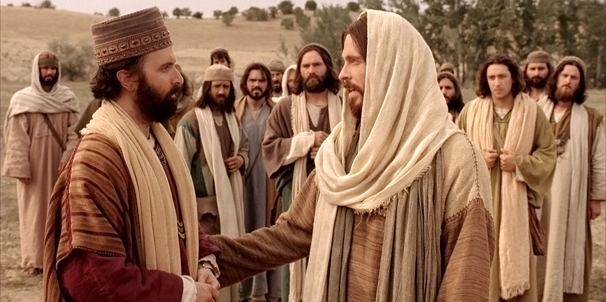
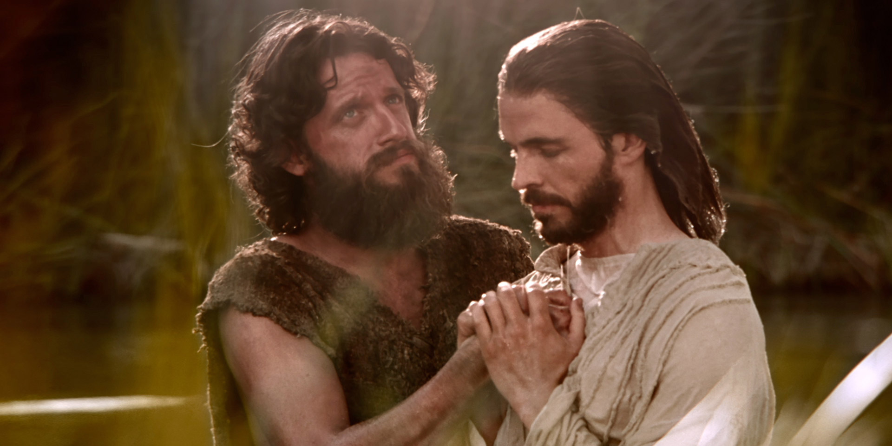
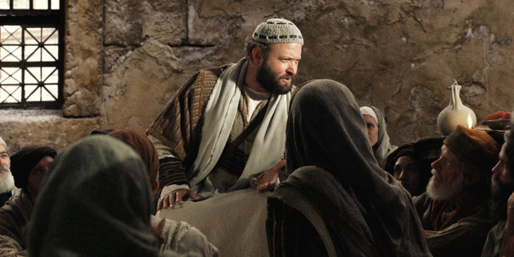

I have been in England and Wales for two years teaching people about the faith of Jesus Christ. When observing our Saviour many of us asks, how can we become like him? How can we have the faith that he has? They want to become disciples of Him.
If you know Jesus Christ, then you want to follow Him. If you follow him, you will become like him. Before we get confused and think that is enough we need to rethink. How did Jesus become as he became? He consistently made choices, many times choices we have never heard about. How could you then become like him?